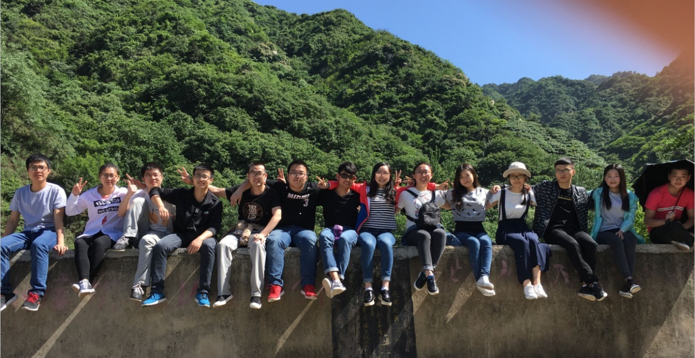

西安邮电大学ThoughCoding实验室成立了!
更新时间:2016-3-6 作者:admin

ThoughtCoding实验室由若干智能硬件爱好者于2015年4月共同创办。短短数月，在老师的指导下，嵌入式、大数据、安卓、web组共同协作，参加了互联网+、大挑、3S杯等大赛，并获得出色的成绩。同时有项目已经进驻西邮创业孵化基地。
实验室目前拥有最新pcduino开发板，一百多种传感器，
30多台主机搭建的hadoop云计算集群。实验室研究方向为:嵌入式、Web前端、移动（Android）端、运维服务器（Linux）、大数据。组内学长学姐可带领学习。我们相信，技术改变生活，奋斗共享价值。实验室期待和你一起，共同创造更多可能。
实验室定期积极讨论技术热点问题，并开启相关项目，让大家在开展项目的过程中磨练技术、促进合作、了解趋势，在项目驱动下大家的学习劲头旺盛，对学习的技术有了更多的应用、更多的了解。以下是工作室项目一览表：
1.基于hadoop的多生理参数的远程监护系统
硬件部分采集人体的心电、脉搏、血氧、血糖、脑电等各项生理参数，Android端实时显示并上传至云服务器。后台经过大数据分析，给医生提供详细的临床数据，给患者就医提供方便。系统采用可穿戴智能硬件设计跌倒检测装置，为空巢老年人出行提供安全保障。
2.智能四旋翼无人机
基于STM32开发板，利用PID算法，调节PWM，控制四旋翼自动完成起飞、悬停、寻迹以及降落等功能。
3.智能搜救机器人
通过Android端控制智能搜救机器人完成指定动作，获得机器人的实时视频数据，完成既定任务。
4.基于安卓系统的远程安防智能家居系统
使用搭载安卓系统的Pcduino开发板作为智能家居控制平台，利用光、热、烟雾、声音等传感器采集数据，用户通过手机APP获取到实时信息以监控室内情况，来保障家用电器的正常使用。
5. 基于Android平台的城市地标移动搜索开发
旅游业是陕西省的支柱产业，开发和旅游产业相关的移动视觉搜索应用具有重要的学术和应用价值。本项目研究基于移动视觉搜索的城市地标图像识别技术。通过城市地标的识别可以提供给游客更好的旅游体验，进一步挖掘城市的旅游资源，提升城市的形象。